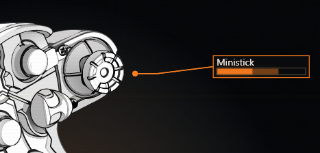
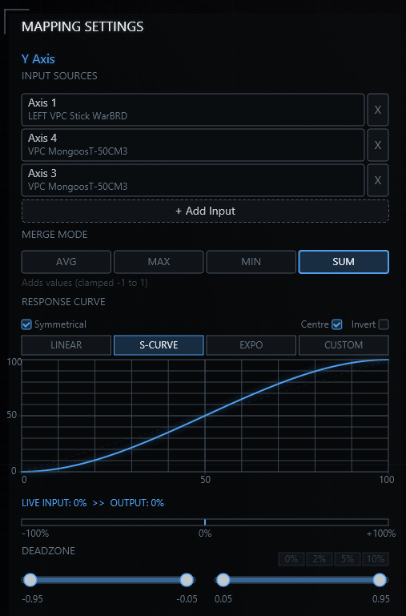
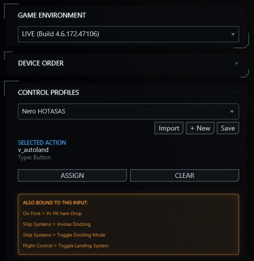
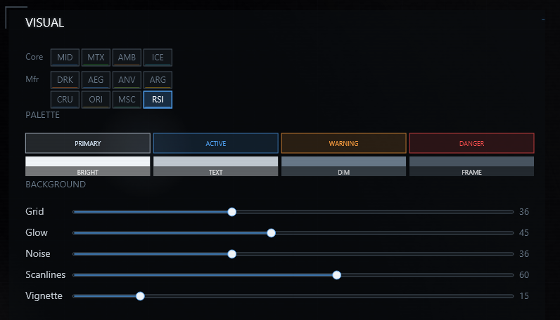
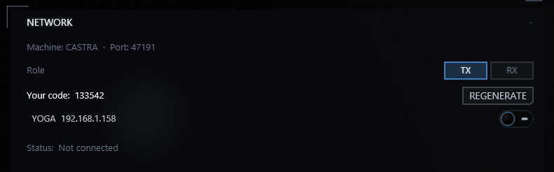
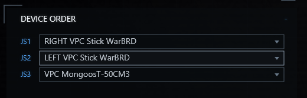
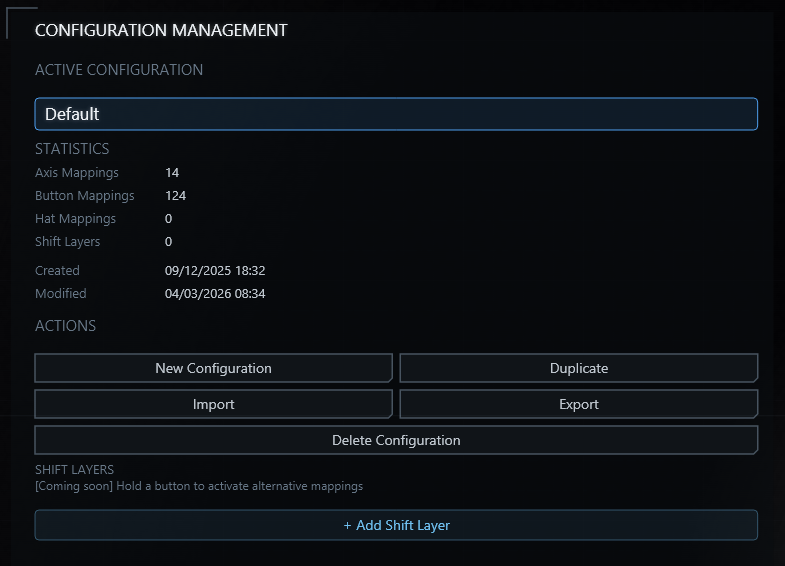
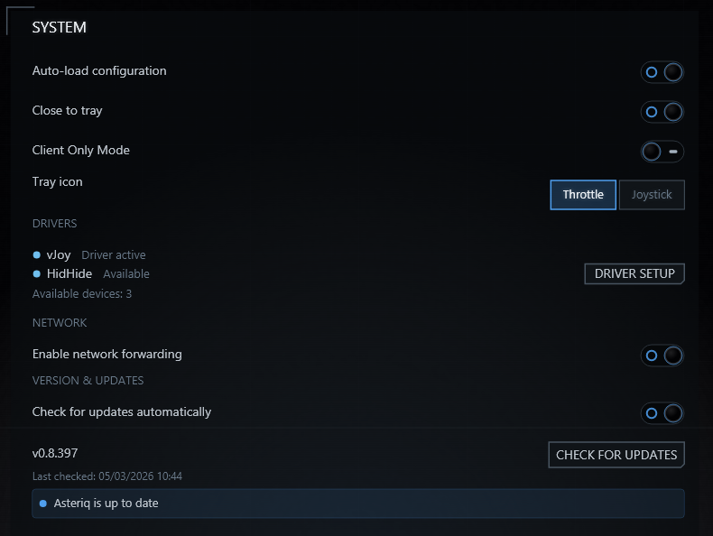

See the app
Features
Device Management
Each physical controller is assigned to a specific vJoy slot — that slot is what Star Citizen sees. Assignments are tied to the device's hardware identity, so nothing shifts if you replug cables in a different order.
Asteriq displays HidHide driver status in the Settings panel. To prevent Star Citizen from seeing both your physical hardware and the virtual devices simultaneously, install HidHide and configure device visibility within HidHide directly.

Axis Mapping & Curves
Axes support Linear, S-Curve, Exponential, and fully Custom response curves. In custom mode you place control points manually and see a live input vs output readout as you move the stick.
Multiple physical axes can be merged onto a single virtual output — useful if rudder input is split across a twist grip and separate pedals. Average, maximum, minimum, or sum merge modes are all available. A symmetrical deadzone with quick presets rounds things out.

Star Citizen Bindings
The SC Bindings tab loads your Star Citizen control profile and lays out every action against its bound inputs across all your devices. A single action can be bound to different inputs on each joystick — throttle, stick, and rudder pedals all in one grid.
When two actions share the same physical input, Asteriq flags the conflict so you can resolve it before it causes problems in-game. Assign directly in the grid, then export your profile. Your original SC files are never modified.

Visual Themes
Choose from manufacturer-inspired colour schemes — Drake, Aegis, Anvil, Crusader, Origin, Musashi, RSI, and others — or tune the palette manually. Background atmosphere controls (grid intensity, glow, noise, scanlines, vignette) let you dial in exactly the look you want.

Network Forwarding
Your sim kit stays set up exactly where it is. Asteriq forwards its input over your local network so you can use it from any PC in the house — swap between machines without replugging a single cable or reconfiguring anything.
The receiving machine can run in Client Only Mode, which hides the device and mapping tabs to keep the interface focused on Star Citizen bindings.

More of the App



Getting Started
-
1
Download and extract
Download
Asteriq.zipusing the button above and extract it to a permanent folder (for exampleC:\Tools\Asteriq\). RunAsteriq.exefrom there. Windows may show an unknown publisher warning — click More info, then Run anyway. -
2
Install drivers if you need them
Virtual joystick forwarding requires the vJoy 2.x driver. If you want Star Citizen to see only the virtual devices and not your physical hardware, install HidHide and configure device visibility within HidHide directly. Asteriq runs without either driver, but most people will want at least vJoy.
-
3
Assign your devices
Open the Devices tab and assign each physical controller to a vJoy slot. That slot number is what Star Citizen will see as a joystick.
-
4
Set up your mappings
In the Mappings tab, dial in your axis curves and set button modes as needed.
-
5
Start forwarding, then launch the game
Click Start Forwarding and launch Star Citizen. Asteriq runs in the background and routes input through the virtual devices.
Support
Asteriq is free for personal use. If it has saved you time, you can buy me a coffee.
New to Star Citizen? Use referral code STAR-RBDQ-Z4JG when you enlist and you'll get 5,000 bonus aUEC to start with.